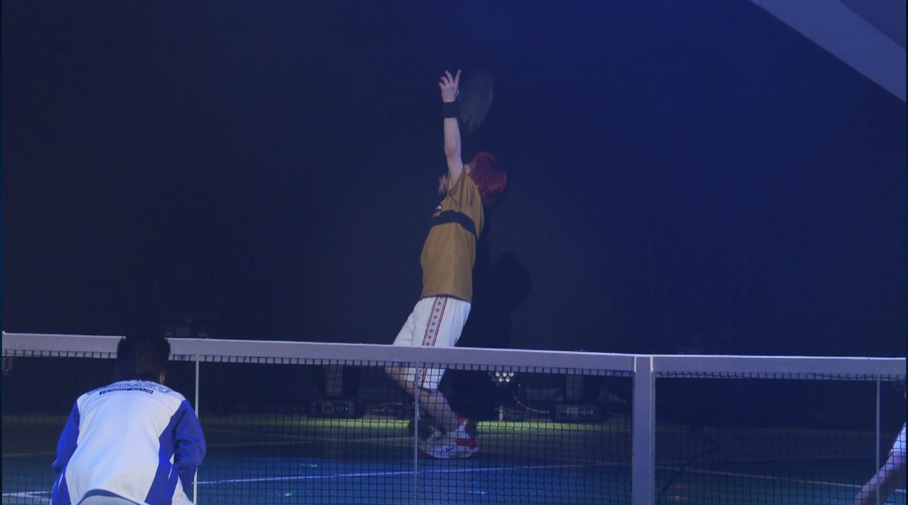
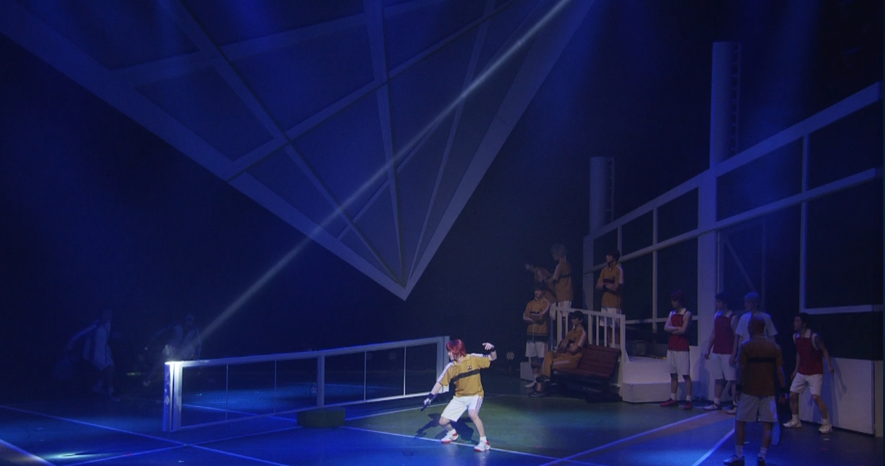
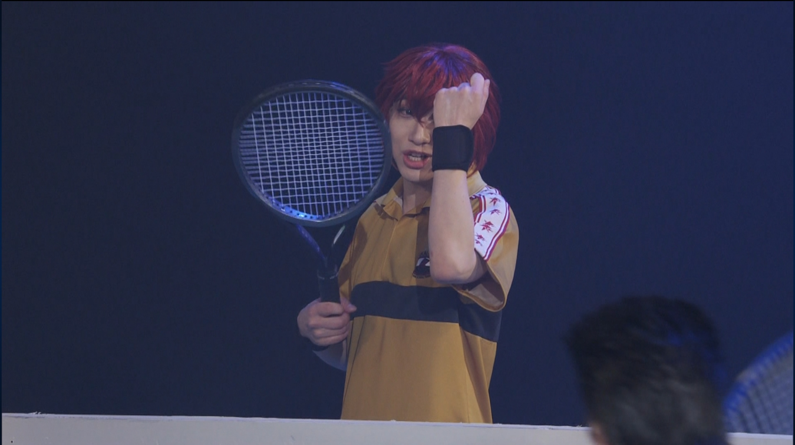

鉄柱当て｜Observation Notes
丸井の妙技の一つ。
打球をネットポール（鉄柱）に当てることで軌道を変えて相手のコートに落とす。
一見ふざけた遊びのようなプレーだが、高い精度と空間認識能力が求められ、試合中に狙って成功させるのは至難の業だ。
技の評価
丸井の感覚的プレーの極致。技術以上に“勘”の鋭さが鍵になっていると推測する。
相手の虚を突く場面で使用され、ペアへの流れを変える起点にもなる。
- 精度 ：◎
- 再現性 ：△
- 奇襲性 ：◎
- 決定力 ：◯
▶ 観察記録ファイル（全3枚）



×